DPCM ExperimentWhile writing the introduction to compression, I thought I might try my own variation of DPCM. Take a look at the plot below. This is a chirp signal. But I've subtracted each sample from the following one. Chirp signals start at one frequency, and increase frequency linearly through time. So, you might start at 0hz and end up at 4000hz a little later. Notice how at the start, when the frequency is low, the range is small. This is because there are lots of samples per cycle at low frequencies. Thus each sample is very close in value to the next. If you were to sample the signal at a much higher rate than was necessary, you could set the quantization range much lower. The trouble is this would increase the number of samples; so, it wouldn't be any good for compression. | ||
| 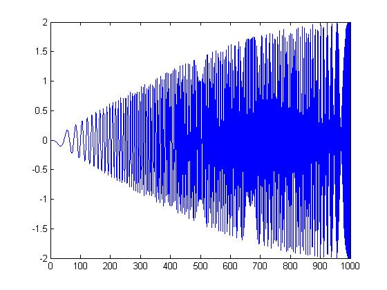 | ||
|
But what if instead, you upsampled the signal, broke it into frames, and put each frame in a different channel or frequency band? That's exactly what I tried. Of course, I didn't think about the frequencies in the high bands until after I started. But I went ahead with the experiment anyway. I would expect the frames in the low bands to sound good, and the ones in the high bands to sound poor. However, you might be able to sort the frames according to power or some other measure of importance. There is a lot of dead time in speech. Those could be placed in upper channels. The first thing I learned when trying to implement DPCM is that quantization errors build up and cause serious problems. I thought it might be an artifact of the way I did quantization, but after trying several methods, I decided there must be something else going on. Eventually I did the Google and found out that you have to use the quantized sample as the prediction of the next sample. This stops the little errors from building up. There were some other problems as well. I'm not a filter expert. I had a lot of problems trying to design very narrow filters in matlab. It was especially problematic near DC and the uppermost frequency. The plots below are (in order): (1)8-bit DPCM, (2)3-bit DPCM, (3)2-bit DPCM, (4)2-bit DPCM (scaling divided by 5), (5)2-bit DPCM (scaling divided by 10), (6)2-bit DPCM (scaling divided by 25) | ||
| 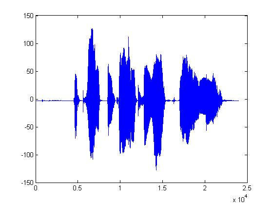 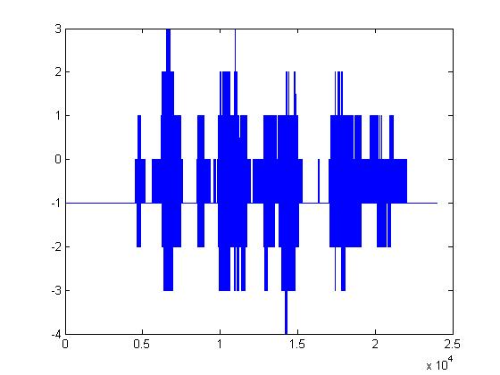 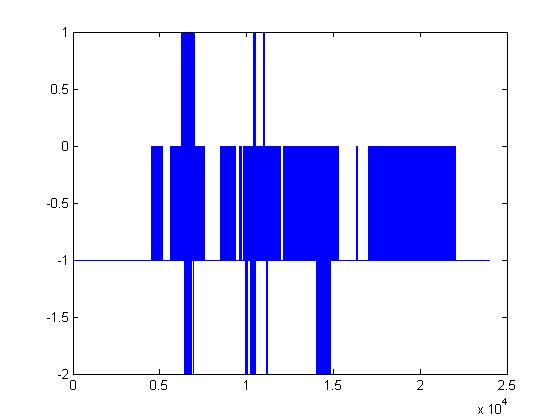 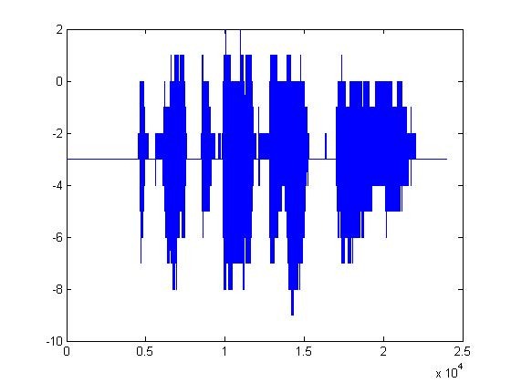 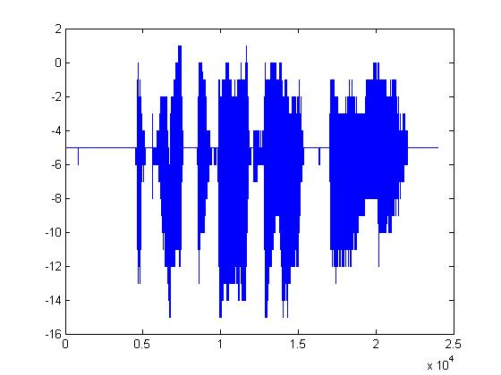 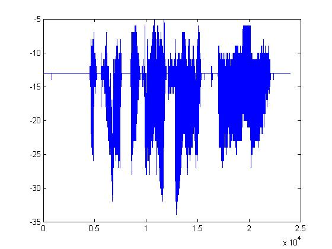 | ||
|
Given what 2-bit quantization looks like, it's pretty amazing that it can be understood at all. The following plots are the same but with the procedure mentioned above applied first. (1)8-bit DPCM, (2)3-bit DPCM, (3)2-bit DPCM, (4)2-bit DPCM (scaling divided by 5), (5)2-bit DPCM (scaling divided by 10), (6)2-bit DPCM (scaling divided by 25) | ||
| 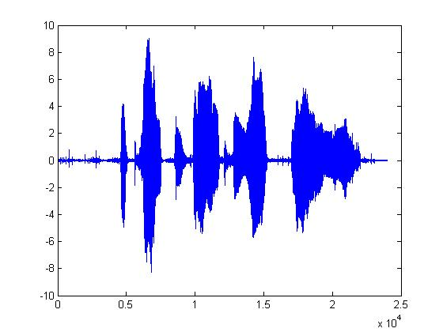 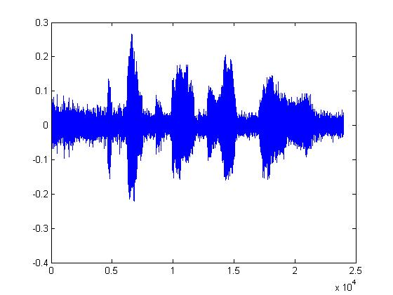 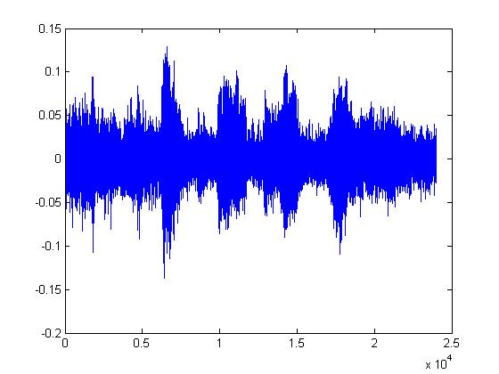 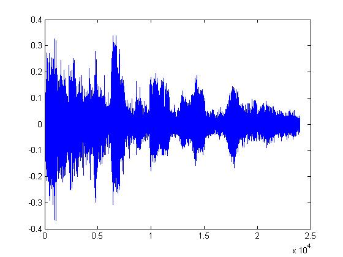 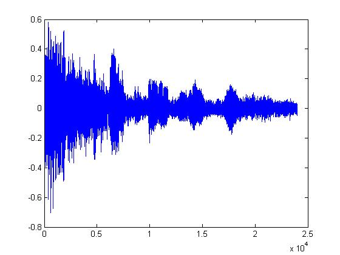 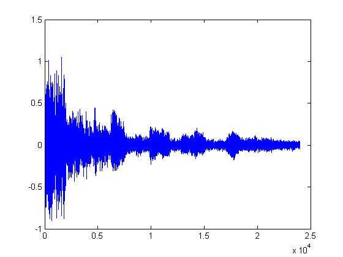 | ||
|
You should notice how in the last few plots, the signal is disappearing into the noise. It's interesting that the signal doesn't sound like it's been quantized. It sounds exactly like static or background white noise. | ||